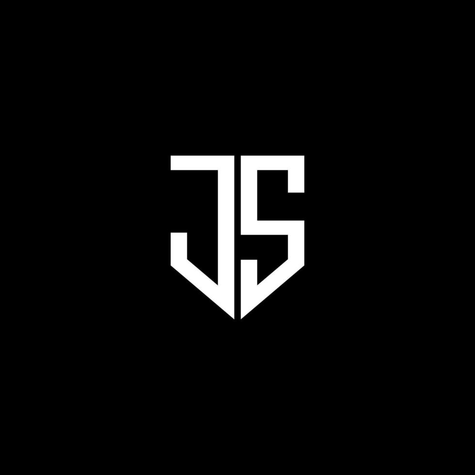

Habilidades

Desenvolvimento básico de interatividade e funcionalidades dinâmicas em websites. Experiência com bibliotecas e frameworks para construção de interfaces ricas.

Tenho experiência em usar CSS para construir layouts responsivos, que se adaptam a diferentes tamanhos de tela, garantindo que os sites funcionem perfeitamente em dispositivos móveis, tablets e desktops.

Possuo experiência básica em java script para criação de interfaces interativas como formulários, botões e sliders.
Possuo experiência em python e domino habilidades básicas em banco de dados MySQL e Sistema de Previsão de Vendas (Machine Learning)